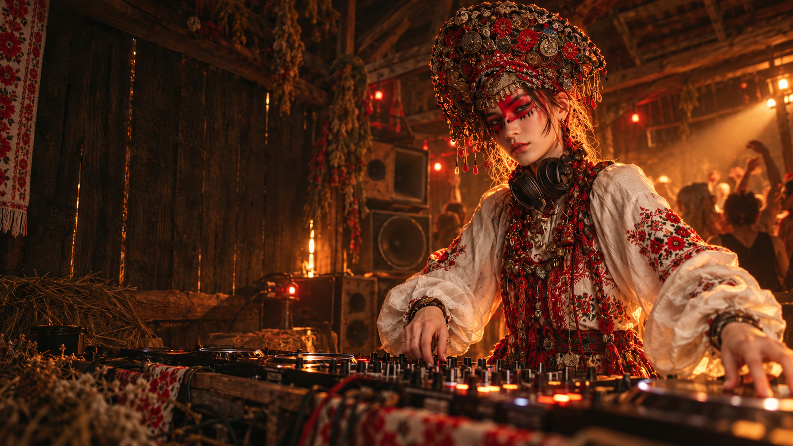

Фолк-рэйв / громко по-народному
Zlombie
Ностальгия,
пляски и угар
Читать дальше
Zlombie — музыкальный проект, где есть всё, к чему нас дико тянет: ностальгические мелодии и мотивы, безудержные танцы и слегка бесстыжий юмор. Сразу оговоримся: музыка тут напрочь и целиком исполнена с помощью ИИ, зато тексты авторских песен — свои, прочувствованные и настоящие.
ВЫШИВКА / ПРОВОДА / ТАНЦЫТРАДИЦИИ НА НОВОЙ ЧАСТОТЕ